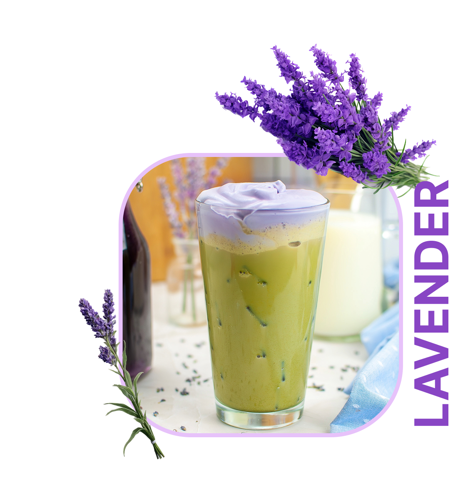
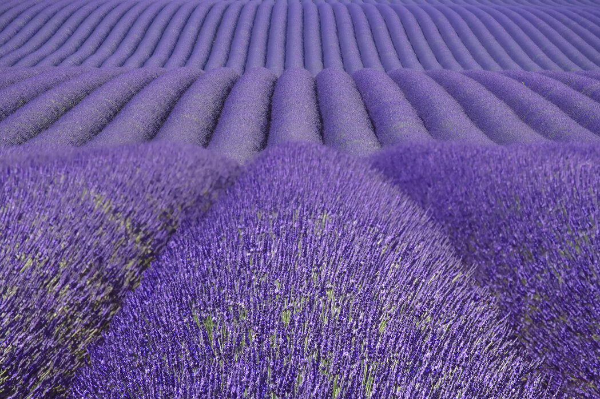

LAVENDERS PURPOSE
Lavenders are unique in purpose. Unlike the other flowers covered, Lavenders are used a lot in homes ranging from keeping out annoying pests to being used in cuisine. A Lavenders purpose is to provide a soothed mindset, promote sleep and relieve anxiety.
